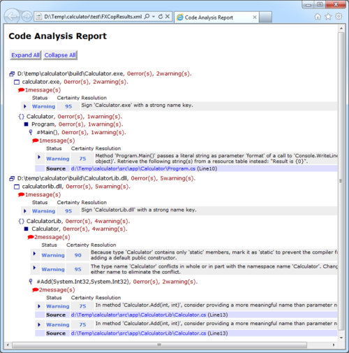

Adding FxCop to a FAKE build script
This article is an extension to the getting started guide. You will improve the same Calculator sample with a task for FxCop.
If you need more details please see the API docs for the FxCop task.
Setting up FxCop
Open build.fsx from your Calculator sample folder and add a new target FxCop to the targets section:
1: 2: 3: 4: 5: 6: 7: 8: 9: 10: |
|
In the dependencies section modify the build order to:
1: 2: 3: 4: 5: 6: 7: |
|
That's it. If you run your build script you will get new .xml file in the ./test* folder:

Letting the build fail
If you want to let the build fail in the case that FxCop reports any errors or warnings you can use the FailOnError parameter:
1: 2: 3: 4: 5: 6: 7: 8: 9: 10: 11: |
|
If you activate this option FxCop errors will cause your build to fail. Possible values are:
- FxCopErrorLevel.Warning
- FxCopErrorLevel.CriticalWarning
- FxCopErrorLevel.Error
- FxCopErrorLevel.CriticalError
- FxCopErrorLevel.ToolError
- FxCopErrorLevel.DontFailBuild
The values are cummulative. If you choose FxCopErrorLevel.CriticalWarning the build will fail for critical warnings, errors, critical errors and FxCop tool errors but not for simple warnings. The default is FxCopErrorLevel.DontFailBuild.